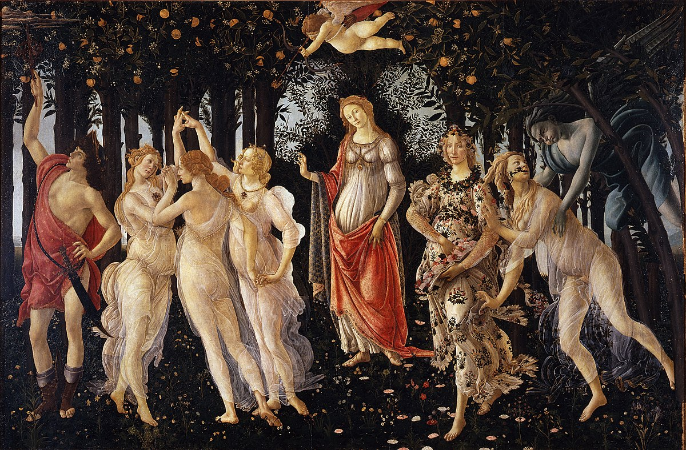
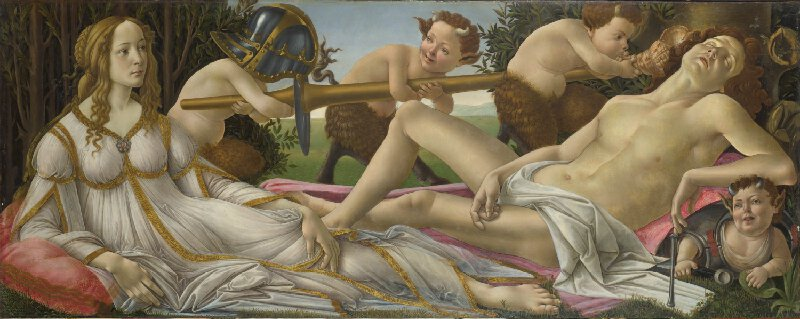
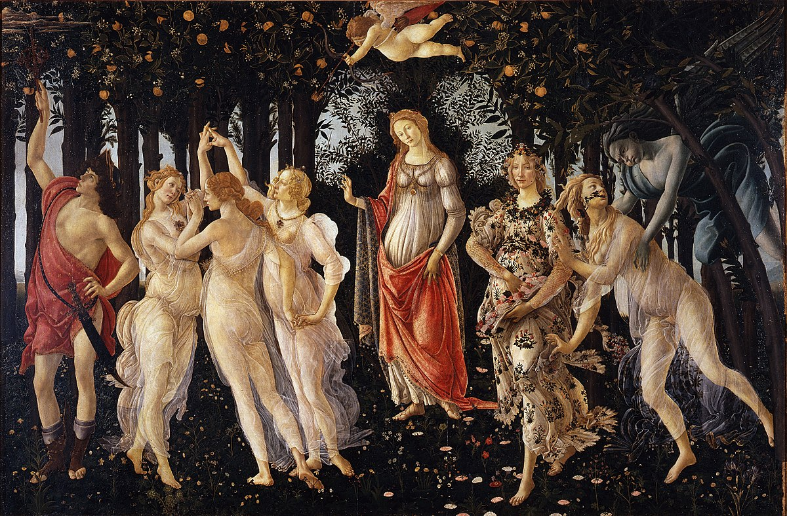
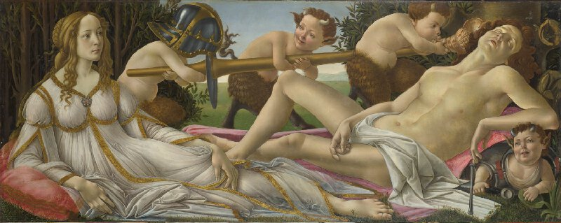
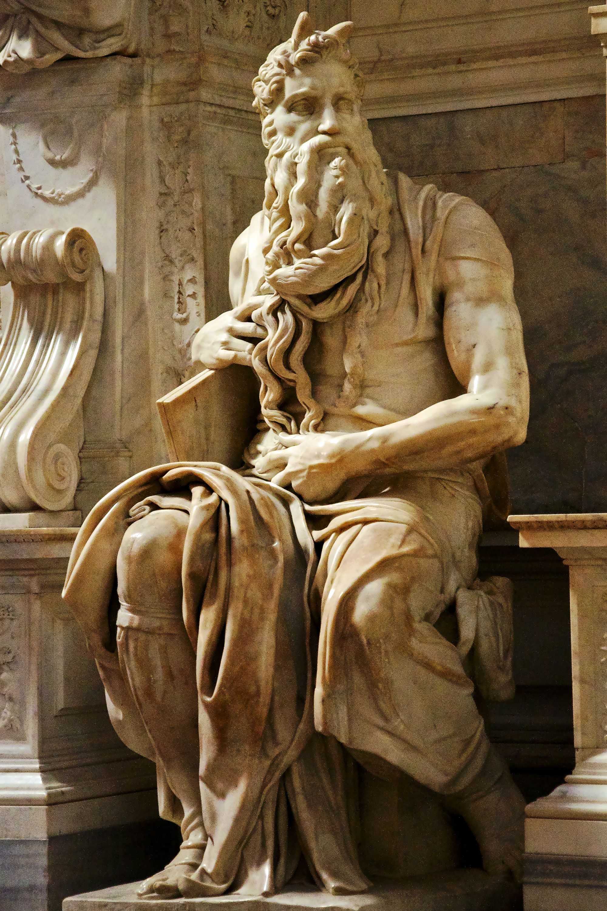
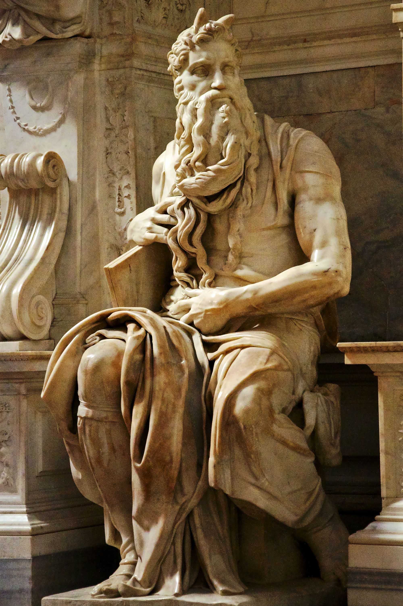

Florence is the capital city of the Italian region of Tuscany. It is the most populous city in Tuscany, with 383,084 inhabitants in 2013, and over 1,520,000 in its metropolitan area. It was a centre of medieval European trade and finance and one of the wealthiest cities of that era. It is considered the birthplace of the Renaissance, and has been called "the Athens of the Middle Ages". A turbulent political history includes periods of rule by the powerful Medici family and numerous religious and republican revolutions. From 1865 to 1871 the city was the capital of the recently established Kingdom of Italy. The Florentine dialect forms the base of Standard Italian and it became the language of culture throughout Italy due to the prestige of the masterpieces by Dante Alighieri, Petrarch, Giovanni Boccaccio, Niccolò Machiavelli and Francesco Guicciardini.
The city attracts millions of tourists each year, and the Historic Centre of Florence was declared a World Heritage Site by UNESCO in 1982. The city is noted for its culture, Renaissance art and architecture and monuments. The city also contains numerous museums and art galleries, such as the Uffizi Gallery and the Palazzo Pitti, and still exerts an influence in the fields of art, culture and politics. Due to Florence's artistic and architectural heritage, it has been ranked by Forbes as one of the most beautiful cities in the world.
Florence is an important city in Italian fashion, being ranked in the top 15 fashion capitals of the world; furthermore, it is a major national economic centre, as well as a tourist and industrial hub. In 2008, the city had the 17th highest average income in Italy.
Until the late 14th century, prior to the Medici, Florence's leading family were the House of Albizzi. The main challengers of the Albizzi family were the Medicis, first under Giovanni de' Medici, later under his son Cosimo di Giovanni de' Medici. The Medici controlled the Medici bank—then Europe's largest bank—and an array of other enterprises in Florence and elsewhere. In 1433, the Albizzi managed to have Cosimo exiled. The next year, however, saw a pro-Medici Signoria elected and Cosimo returned. The Medici became the town's leading family, a position they would hold for the next three centuries. Florence remained a republic until 1537, traditionally marking the end of the High Renaissance in Florence, but the instruments of republican government were firmly under the control of the Medici and their allies, save during the intervals after 1494 and 1527. Cosimo and Lorenzo rarely held official posts, but were the unquestioned leaders.
Cosimo de' Medici was highly popular among the citizenry, mainly for bringing an era of stability and prosperity to the town. One of his most important accomplishments was negotiating the Peace of Lodi with Francesco Sforza ending the decades of war with Milan and bringing stability to much of Northern Italy. Cosimo was also an important patron of the arts, directly and indirectly, by the influential example he set.
Cosimo was succeeded by his sickly son Piero de' Medici, who died after five years in charge of the city. In 1469 the reins of power passed to Cosimo's twenty-one-year-old grandson Lorenzo, who would become known as "Lorenzo the Magnificent." Lorenzo was the first of the family to be educated from an early age in the humanist tradition and is best known as one of the Renaissance's most important patrons of the arts. Under Lorenzo, the Medici rule was formalized with the creation of a new Council of Seventy, which Lorenzo headed. The republican institutions continued, but they lost all power. Lorenzo was less successful than his illustrious forebears in business, and the Medici commercial empire was slowly eroded. Lorenzo continued the alliance with Milan, but relations with the papacy soured, and in 1478, Papal agents allied with the Pazzi family in an attempt to assassinate Lorenzo. Although the plot failed, Lorenzo's young brother, Giuliano, was killed, and the failed assassination led to a war with the Papacy and was used as justification to further centralize power in Lorenzo's hands.
The Italian Renaissance was a period of Italian history that began in the 14th century and lasted until the 17th century. It peaked during the 15th and 16th centuries, when it spread across Europe and marked the transition from the Middle Ages to Modernity. The French word renaissance (Rinascimento in Italian) means "Rebirth" and defines the period as one of cultural revival and renewed interest in classical antiquity after the centuries labeled the Dark Ages by Renaissance humanists.
The Renaissance began in Tuscany, and was centred in the city of Florence. Florence, one of the several city-states of the peninsula, rose to economic prominence by providing credit for European monarchs and laying down the groundwork for capitalism and banking. The Renaissance later spread to Venice, heart of a mediterranean empire and in control of the trade routes with the east since the participation in the crusades and the voyages of Marco Polo, where the remains of ancient Greek culture were brought together and provided humanist scholars with new texts. Finally the Renaissance had a significant effect on the Papal States and Rome, largely rebuilt by Humanist and Renaissance popes (such as Alexander VI and Julius II), who were frequently involved in Italian politics, in arbitrating disputes between competing colonial powers and in opposing the Reformation.
The Italian Renaissance is best known for its achievements in painting, architecture, sculpture, literature, music, philosophy, science and exploration. Italy became the recognized European leader in all these areas by the late 15th century, during the Peace of Lodi (1454-1494) agreed between Italian states. The Italian Renaissance peaked in the mid-16th century as domestic disputes and foreign invasions plunged the region into the turmoil of the Italian Wars (1494-1559). However, the ideas and ideals of the Italian Renaissance endured and spread into the rest of Europe, setting off the Northern Renaissance.
Italian Renaissance art exercised a dominant influence on subsequent European painting and sculpture for centuries afterwards, with artists such as Leonardo da Vinci, Michelangelo, Raphael, Donatello, Giotto di Bondone, Masaccio, Fra Angelico, Piero della Francesca, Domenico Ghirlandaio, Perugino, Botticelli, and Titian. The same is true for architecture, as practiced by Brunelleschi, Leon Battista Alberti, Andrea Palladio, and Bramante. Their works include, to name only a few, the Florence Cathedral, St. Peter's Basilica in Rome, and the Tempio Malatestiano in Rimini, as well as several private residences. The musical era of the Italian Renaissance was defined by the Roman School and later by the Venetian School and the birth of Opera in Florence. In philosophy, thinkers such as Galileo, Machiavelli, Giordano Bruno and Pico della Mirandola, emphasized naturalism and humanism, thus rejecting dogma and scholasticism.
Sandro Botticelli was an Italian painter of the Early Renaissance. He belonged to the Florentine School under the patronage of Lorenzo de' Medici, a movement that Giorgio Vasari would characterize less than a hundred years later in his Vita of Botticelli as a "golden age". Botticelli's posthumous reputation suffered until the late 19th century; since then, his work has been seen to represent the linear grace of Early Renaissance painting.
As well as the small number of mythological subjects which are his best known works today, he painted a wide range of religious subjects and also some portraits. He and his workshop were especially known for their Madonna and Childs, many in the round tondo shape. Botticelli's best-known works are The Birth of Venus and Primavera.
 



Michelangelo di Lodovico Buonarroti Simoni or more commonly known by his first name Michelangelo (1475 –1564) was an italian sculptor, painter, architect and poet of the High Renaissance born in the Republic of Florence, who exerted an unparalleled influence on the development of western art. Considered by many the greatest artist of his lifetime, and by some the greatest artist of all time, his artistic versatility was of such a high order that he is often considered a contender for the title of the archetypal Renaissance man, along with his rival, the fellow Florentine and client of the Medici, Leonardo da Vinci.
The Creation of Adam is a fresco painting, which forms part of the Sistine Chapel's ceiling, painted c. 1508–1512. It illustrates the Biblical creation narrative from the Book of Genesis in which God gives life to Adam, the first man. The fresco is part of a complex iconographic scheme and is chronologically the fourth in the series of panels depicting episodes from Genesis.
The image of the near-touching hands of God and Adam has become iconic of humanity. The painting has been reproduced in countless imitations and parodies. Michelangelo's Creation of Adam is one of the most replicated religious paintings of all time.
 


Leonardo da Vinci was an Italian polymath of the Renaissance whose areas of interest included invention, drawing, painting, sculpting, architecture, science, music, mathematics, engineering, literature, anatomy, geology, astronomy, botany, writing, history, and cartography. He has been variously called the father of palaeontology, ichnology, and architecture, and he is widely considered one of the greatest painters of all time. Sometimes credited with the inventions of the parachute, helicopter, and tank, he epitomised the Renaissance humanist ideal.
Many historians and scholars regard Leonardo as the prime exemplar of the "Universal Genius" or "Renaissance Man", an individual of "unquenchable curiosity" and "feverishly inventive imagination", and he is widely considered one of the most diversely talented individuals ever to have lived. According to art historian Helen Gardner, the scope and depth of his interests were without precedent in recorded history, and "his mind and personality seem to us superhuman, while the man himself mysterious and remote". Marco Rosci notes that, while there is much speculation regarding his life and personality, his view of the world was logical rather than mysterious, although the empirical methods he employed were unorthodox for his time.
Leonardo is renowned primarily as a painter. The Mona Lisa is the most famous of his works and the most parodied portrait, and The Last Supper is the most reproduced religious painting of all time. His drawing of the Vitruvian Man is also regarded as a cultural icon, being reproduced on items as varied as the euro coin, textbooks, and T-shirts. Perhaps 15 of his paintings have survived. Nevertheless, these few works compose a contribution to later generations of artists rivalled only by that of his contemporary Michelangelo, together with his notebooks, which contain drawings, scientific diagrams, and his thoughts on the nature of painting.